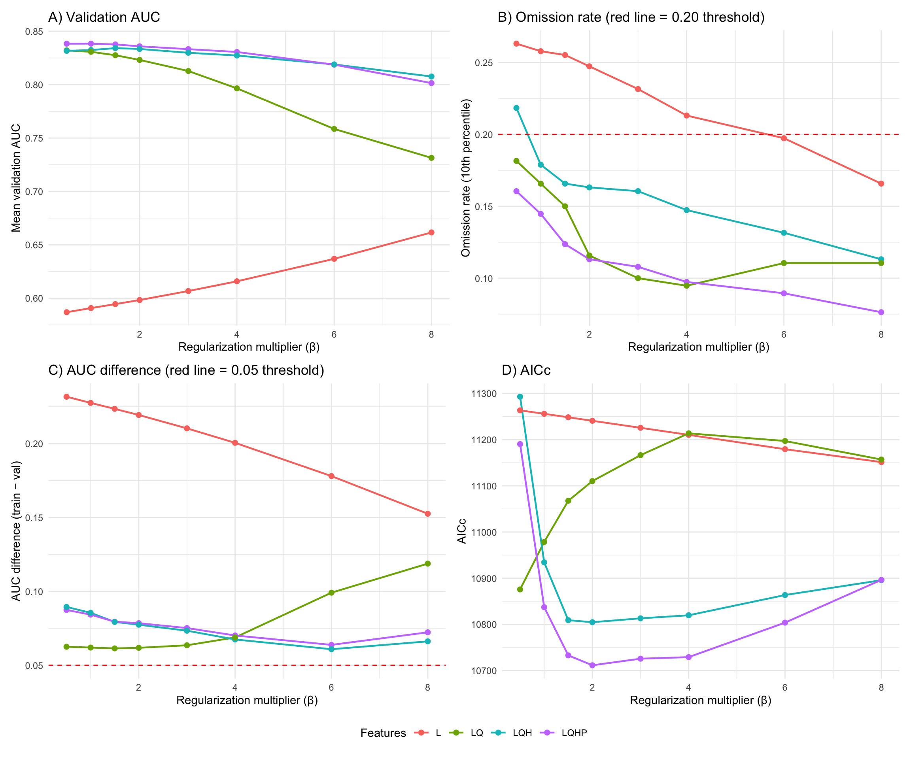
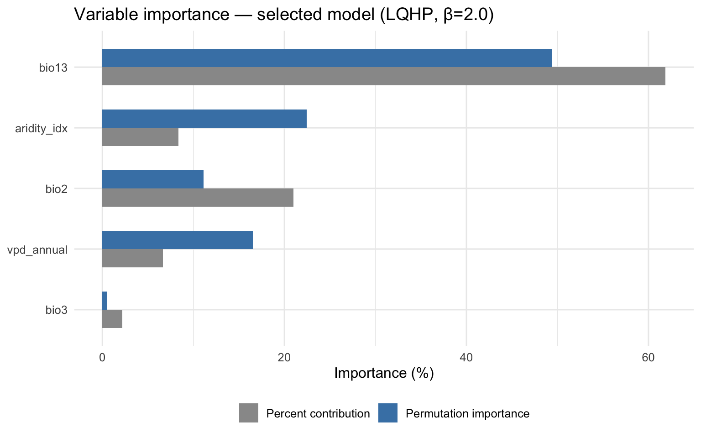
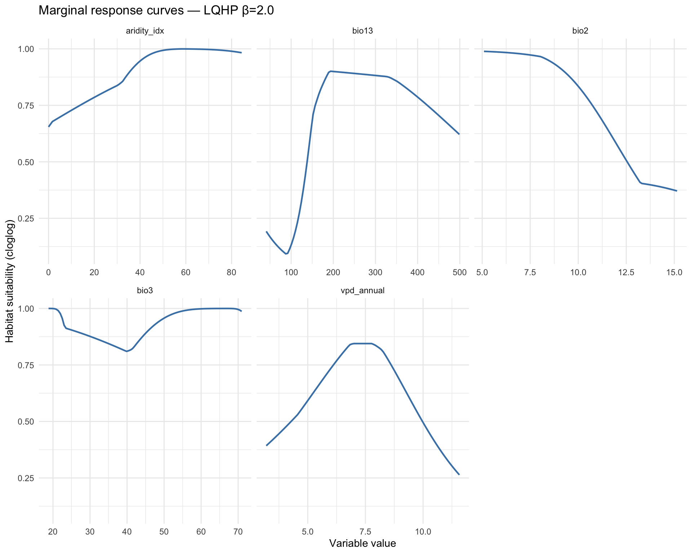

# Set Java memory BEFORE loading rJava/ENMeval
options(java.parameters = "-Xmx14g")
library(tidyverse)
library(terra)
library(sf)
library(ENMeval)
library(rJava)Step 5: Model Fitting — ENMeval Optimization
Overview
This script fits MaxEnt models using ENMeval 2.0, with key improvements from v1:
- Restricted background from the accessible area (Step 4) instead of global random sampling.
- Bias-corrected background using Ixodidae target-group sampling weights.
- Expanded parameter search: L, LQ, LQH, LQHP feature classes × β = 0.5, 1, 1.5, 2, 3, 4, 6, 8 (32 candidate models). LQHPT dropped because threshold features with low regularization caused severe overfitting in v1.
- Multi-criteria model selection (not AICc alone):
- Omission rate at 10th percentile ≤ 0.20
- AUC difference (training − validation) < 0.05
- Lowest AICc among remaining candidates
base_dir <- "~/Library/CloudStorage/OneDrive-CSIRO/OneDrive - Docs/01_Projects/Hlongicornis_SDM/"
processed_v2 <- file.path(base_dir, "processed_data_2")
figures_dir <- file.path(base_dir, "figures_2")
outputs_dir <- file.path(base_dir, "outputs_2")1. Load occurrence, background, and environmental data
# Occurrence coordinates (lon, lat only — ENMeval needs this format)
occ_coords <- read_csv(file.path(processed_v2, "occurrence_coords.csv"),
show_col_types = FALSE) %>%
as.data.frame()
# Background coordinates
bg_coords <- read_csv(file.path(processed_v2, "background_coords.csv"),
show_col_types = FALSE) %>%
as.data.frame()
# Environmental rasters masked to accessible area M
# First, try to load the .tif version of the environmental data instead of the RDS
env_M_path <- file.path(processed_v2, "env_selected_M.tif")
if (file.exists(env_M_path)) {
env_M <- rast(env_M_path)
message("Successfully loaded environmental rasters from .tif file")
} else {
# If the .tif file doesn't exist or is corrupted, handle that case
message("Could not load environmental rasters from .tif - trying to rebuild from original data")
# You'll need code here to reconstruct env_M from original sources
# For example:
# env_M <- rast("path/to/original/climate_data.tif")
# accessible_area <- st_read(file.path(processed_v2, "accessible_area_M.gpkg"))
# env_M <- crop(env_M, accessible_area)
# env_M <- mask(env_M, accessible_area)
}
# When saving environmental raster data for future sessions, use writeRaster instead of saveRDS
# writeRaster(env_M, file.path(processed_v2, "env_selected_M.tif"), overwrite = TRUE)
sprintf("Occurrences: %d | Background: %d | Env layers: %d",
nrow(occ_coords), nrow(bg_coords), nlyr(env_M))
sprintf("Variables: %s", paste(names(env_M), collapse = ", "))[1] "Occurrences: 390 | Background: 9999 | Env layers: 5"
[1] "Variables: bio2, bio3, bio13, aridity_idx, vpd_annual"2. Define ENMeval parameter grid
We test 4 feature class combinations × 8 regularization multipliers = 32 candidate models. The LQHPT combination is deliberately excluded because threshold features combined with low regularization produced a 152-coefficient model in v1 that showed clear signs of overfitting (validation AUC drop of 0.082, omission rate of 49.87%).
# Feature class combinations to test
# L = Linear, Q = Quadratic, H = Hinge, P = Product
# LQHPT is excluded (overfitting risk with threshold features)
feature_classes <- c("L", "LQ", "LQH", "LQHP")
# Regularization multipliers — extended range up to 8
# Higher β values increase regularization, producing simpler/smoother models
# that tend to transfer better to new regions and time periods
reg_multipliers <- c(0.5, 1, 1.5, 2, 3, 4, 6, 8)
sprintf("Parameter grid: %d feature classes × %d regularization = %d models",
length(feature_classes), length(reg_multipliers),
length(feature_classes) * length(reg_multipliers))[1] "Parameter grid: 4 feature classes × 8 regularization = 32 models"3. Run ENMeval
Using spatial block cross-validation (k = 5) as in v1. Spatial blocks ensure that training and validation folds are geographically separated, which provides a more realistic estimate of model transferability than random k-fold CV.
# This is the most computationally intensive step (~30 min to several hours
# depending on hardware and number of variables)
# Results are cached to avoid re-running
enmeval_cache <- file.path(processed_v2, "enmeval_results.rds")
if (file.exists(enmeval_cache)) {
enmeval_results <- readRDS(enmeval_cache)
message("Loaded cached ENMeval results")
} else {
message("Running ENMeval — this may take a while...")
# Create a clean dataframe with ONLY lon and lat columns for occurrences
occ_coords_clean <- data.frame(
lon = occ_coords$lon,
lat = occ_coords$lat
)
# Create a clean dataframe with ONLY lon and lat columns for background points
bg_coords_clean <- data.frame(
lon = bg_coords$lon,
lat = bg_coords$lat
)
enmeval_results <- ENMevaluate(
occs = occ_coords_clean,
taxon.name = "H. longicornis",
bg = bg_coords_clean,
envs = env_M,
algorithm = "maxent.jar",
tune.args = list(
fc = feature_classes,
rm = reg_multipliers
),
partitions = "block", # spatial block CV
doClamp = TRUE, # clamp predictions to training range
parallel = TRUE,
numCores = parallel::detectCores() - 1
)
# Cache the results
saveRDS(enmeval_results, enmeval_cache)
message("ENMeval complete — results cached")
}4. Examine all candidate models
# Extract the results table from ENMeval
results_table <- eval.results(enmeval_results) %>%
mutate(
# Parse feature class and regularization
fc = as.character(fc),
rm = as.numeric(rm),
# Calculate AUC difference (training - validation)
auc.diff = auc.train - auc.val.avg,
# Number of non-zero coefficients (model complexity)
n_coefficients = ncoef
) %>%
arrange(AICc)
sprintf("Total candidate models evaluated: %d", nrow(results_table))
# Display key columns - use tibble formatting which handles NA values better
results_table %>%
select(fc, rm, auc.train, auc.val.avg, auc.diff,
or.10p.avg, AICc, delta.AICc, ncoef) %>%
as_tibble() %>%
print(n = 32)[1] "Total candidate models evaluated: 32"
# A tibble: 32 × 9
fc rm auc.train auc.val.avg auc.diff or.10p.avg AICc delta.AICc ncoef
<chr> <dbl> <dbl> <dbl> <dbl> <dbl> <dbl> <dbl> <dbl>
1 LQHP 2 0.914 0.836 0.0785 0.113 10712. 0 77
2 LQHP 3 0.908 0.833 0.0752 0.108 10726. 14.3 55
3 LQHP 4 0.901 0.831 0.0702 0.0974 10729. 17.7 37
4 LQHP 1.5 0.917 0.838 0.0795 0.124 10733. 21.5 90
5 LQHP 6 0.883 0.819 0.0638 0.0895 10804. 92.3 25
6 LQH 2 0.911 0.833 0.0775 0.163 10805. 93.2 77
7 LQH 1.5 0.914 0.834 0.0793 0.166 10809. 97.6 85
8 LQH 3 0.903 0.830 0.0734 0.161 10813. 102. 54
9 LQH 4 0.895 0.827 0.0675 0.147 10820. 108. 34
10 LQHP 1 0.923 0.838 0.0843 0.145 10837. 126. 110
11 LQH 6 0.880 0.819 0.0609 0.132 10864. 152. 22
12 LQ 0.5 0.895 0.832 0.0625 0.182 10876. 164. 10
13 LQH 8 0.874 0.808 0.0662 0.113 10896. 184. 22
14 LQHP 8 0.874 0.801 0.0723 0.0763 10896. 185. 23
15 LQH 1 0.918 0.832 0.0855 0.179 10934. 223. 110
16 LQ 1 0.893 0.831 0.0620 0.166 10978. 267. 10
17 LQ 1.5 0.889 0.828 0.0614 0.15 11068. 356. 9
18 LQ 2 0.885 0.823 0.0618 0.116 11110. 399. 9
19 L 8 0.814 0.662 0.153 0.166 11151. 440. 4
20 LQ 8 0.850 0.731 0.119 0.111 11157. 445. 8
21 LQ 3 0.876 0.813 0.0635 0.1 11166. 455. 9
22 L 6 0.815 0.637 0.178 0.197 11179. 468. 5
23 LQHP 0.5 0.926 0.838 0.0874 0.161 11190. 479. 128
24 LQ 6 0.858 0.759 0.0991 0.111 11197. 486. 7
25 L 4 0.816 0.616 0.201 0.213 11210. 499. 5
26 LQ 4 0.865 0.797 0.0688 0.0947 11214. 502. 8
27 L 3 0.817 0.607 0.210 0.232 11226. 514. 5
28 L 2 0.818 0.598 0.219 0.247 11241. 529. 5
29 L 1.5 0.818 0.594 0.224 0.255 11248. 537. 5
30 L 1 0.818 0.591 0.228 0.258 11256. 544. 5
31 L 0.5 0.819 0.587 0.232 0.263 11263. 552. 5
32 LQH 0.5 0.921 0.832 0.0895 0.218 11293. 581. 153# Panel 1: Validation AUC by feature class and regularization
p1 <- ggplot(results_table, aes(x = rm, y = auc.val.avg, colour = fc)) +
geom_line(linewidth = 0.8) +
geom_point(size = 2) +
labs(x = "Regularization multiplier (β)",
y = "Mean validation AUC",
colour = "Features",
title = "A) Validation AUC") +
theme_minimal(base_size = 11)
# Panel 2: Omission rate at 10th percentile
p2 <- ggplot(results_table, aes(x = rm, y = or.10p.avg, colour = fc)) +
geom_line(linewidth = 0.8) +
geom_point(size = 2) +
geom_hline(yintercept = 0.20, linetype = "dashed", colour = "red") +
labs(x = "Regularization multiplier (β)",
y = "Omission rate (10th percentile)",
colour = "Features",
title = "B) Omission rate (red line = 0.20 threshold)") +
theme_minimal(base_size = 11)
# Panel 3: AUC difference (overfitting metric)
p3 <- ggplot(results_table, aes(x = rm, y = auc.diff, colour = fc)) +
geom_line(linewidth = 0.8) +
geom_point(size = 2) +
geom_hline(yintercept = 0.05, linetype = "dashed", colour = "red") +
labs(x = "Regularization multiplier (β)",
y = "AUC difference (train − val)",
colour = "Features",
title = "C) AUC difference (red line = 0.05 threshold)") +
theme_minimal(base_size = 11)
# Panel 4: AICc
p4 <- ggplot(results_table, aes(x = rm, y = AICc, colour = fc)) +
geom_line(linewidth = 0.8) +
geom_point(size = 2) +
labs(x = "Regularization multiplier (β)",
y = "AICc",
colour = "Features",
title = "D) AICc") +
theme_minimal(base_size = 11)
library(patchwork)
(p1 | p2) / (p3 | p4) +
plot_layout(guides = "collect") &
theme(legend.position = "bottom")
ggsave(file.path(figures_dir, "05_enmeval_overview.png"),
width = 12, height = 10, dpi = 300)
5. Multi-criteria model selection
Sequential filtering approach (more robust than AICc alone):
- Filter 1 — Omission rate: or.10p.avg ≤ 0.20 Reject models that fail to predict known presences.
- Filter 2 — AUC difference: auc.diff < 0.05 Reject models showing signs of overfitting.
- Filter 3 — AICc: Among remaining, pick the lowest AICc.
- Fallback: If no models pass Filters 1+2, relax Filter 2 to < 0.10.
# Filter 1: Omission rate ≤ 0.20
pass_omission <- results_table %>%
filter(or.10p.avg <= 0.20)
sprintf("Filter 1 (omission ≤ 0.20): %d of %d models pass",
nrow(pass_omission), nrow(results_table))
# Filter 2: AUC difference < 0.05
pass_auc_diff <- pass_omission %>%
filter(auc.diff < 0.05)
sprintf("Filter 2 (AUC diff < 0.05): %d models pass",
nrow(pass_auc_diff))
# Fallback: If no models pass both filters, relax AUC diff threshold
if (nrow(pass_auc_diff) == 0) {
message("WARNING: No models pass both filters. Relaxing AUC diff to < 0.10")
pass_auc_diff <- pass_omission %>%
filter(auc.diff < 0.10)
sprintf("Filter 2 relaxed (AUC diff < 0.10): %d models pass",
nrow(pass_auc_diff))
}
# Filter 3: Lowest AICc among passing models
if (nrow(pass_auc_diff) > 0) {
selected_row <- pass_auc_diff %>%
arrange(AICc) %>%
slice(1)
} else {
# Ultimate fallback: just use lowest AICc from all models
message("WARNING: No models pass any filter. Selecting lowest AICc overall.")
selected_row <- results_table %>%
arrange(AICc) %>%
slice(1)
}
# Display the selected model
selected_fc <- selected_row$fc
selected_rm <- selected_row$rm
sprintf("SELECTED MODEL: fc = %s, rm = %.1f", selected_fc, selected_rm)
sprintf(" AUC (validation): %.4f", selected_row$auc.val.avg)
sprintf(" AUC difference: %.4f", selected_row$auc.diff)
sprintf(" Omission rate: %.4f", selected_row$or.10p.avg)
sprintf(" AICc: %.1f", selected_row$AICc)
sprintf(" Coefficients: %d", selected_row$ncoef)[1] "Filter 1 (omission ≤ 0.20): 25 of 32 models pass"
[1] "Filter 2 (AUC diff < 0.05): 0 models pass"
[1] "Filter 2 relaxed (AUC diff < 0.10): 22 models pass"
[1] "SELECTED MODEL: fc = LQHP, rm = 2.0"
[1] " AUC (validation): 0.8359"
[1] " AUC difference: 0.0785"
[1] " Omission rate: 0.1132"
[1] " AICc: 10711.5"
[1] " Coefficients: 77"Flag potential concerns
# Check for potential concerns and report them
flags <- character(0)
if (selected_row$ncoef > 50) {
flags <- c(flags, sprintf(
"HIGH COMPLEXITY: %d coefficients (>50). Consider whether this is justified.",
selected_row$ncoef
))
}
if (selected_rm < 1) {
flags <- c(flags, sprintf(
"LOW REGULARIZATION: β = %.1f (<1.0). Model may be overfitting.",
selected_rm
))
}
if (selected_row$auc.diff > 0.03) {
flags <- c(flags, sprintf(
"MODERATE OVERFITTING: AUC diff = %.4f (>0.03).",
selected_row$auc.diff
))
}
if (length(flags) > 0) {
message("=== MODEL SELECTION FLAGS ===")
for (f in flags) message(f)
message("=============================")
} else {
message("No concerns flagged. Selected model appears well-regularized.")
}6. Extract the selected model
# Get the selected model object from ENMeval results
# ENMeval stores models indexed by tune.args combination
model_idx <- which(
eval.results(enmeval_results)$fc == selected_fc &
eval.results(enmeval_results)$rm == as.character(selected_rm)
)
selected_model <- eval.models(enmeval_results)[[model_idx]]
sprintf("Selected model extracted: %s β=%s", selected_fc, selected_rm)[1] "Selected model extracted: LQHP β=2"7. Variable importance from the selected model
# Extract variable contributions
var_contrib <- tibble(
variable = names(selected_model@results[
grep("\\.contribution$", rownames(selected_model@results)), ]),
contribution = as.numeric(selected_model@results[
grep("\\.contribution$", rownames(selected_model@results)), ])
)
# Clean up variable names (remove ".contribution" suffix)
var_contrib <- tibble(
variable = gsub("\\.contribution$", "",
rownames(selected_model@results)[
grep("\\.contribution$", rownames(selected_model@results))]),
contribution_pct = as.numeric(selected_model@results[
grep("\\.contribution$", rownames(selected_model@results)), ]),
permutation_pct = as.numeric(selected_model@results[
grep("\\.permutation\\.importance$", rownames(selected_model@results)), ])
) %>%
arrange(desc(permutation_pct))
var_contrib# A tibble: 5 × 3
variable contribution_pct permutation_pct
<chr> <dbl> <dbl>
1 bio13 61.9 49.4
2 aridity_idx 8.33 22.4
3 vpd_annual 6.63 16.5
4 bio2 21.0 11.1
5 bio3 2.18 0.534var_contrib %>%
pivot_longer(cols = c(contribution_pct, permutation_pct),
names_to = "metric", values_to = "importance") %>%
mutate(
metric = ifelse(metric == "contribution_pct",
"Percent contribution", "Permutation importance"),
variable = fct_reorder(variable, importance, .fun = max)
) %>%
ggplot(aes(x = importance, y = variable, fill = metric)) +
geom_col(position = "dodge", width = 0.6) +
scale_fill_manual(values = c("Percent contribution" = "grey60",
"Permutation importance" = "steelblue")) +
labs(
title = sprintf("Variable importance — selected model (%s, β=%.1f)",
selected_fc, selected_rm),
x = "Importance (%)", y = NULL, fill = NULL
) +
theme_minimal(base_size = 12) +
theme(legend.position = "bottom")
ggsave(file.path(figures_dir, "05_variable_importance_selected.png"),
width = 8, height = 5, dpi = 300)
8. Response curves
# Generate response curves using predicts/dismo functionality
# We'll create marginal response curves by varying one variable
# while holding others at their mean
# Create a clean dataframe with ONLY lon and lat columns for extraction
occ_coords_for_extract <- data.frame(
lon = occ_coords$lon,
lat = occ_coords$lat
)
env_values <- extract(env_M, occ_coords_for_extract)
# For each variable, create a sequence and predict
response_data <- list()
for (v in names(env_M)) {
# Create a prediction data frame with one variable varying, others at mean
var_range <- seq(
min(env_values[[v]], na.rm = TRUE),
max(env_values[[v]], na.rm = TRUE),
length.out = 100
)
pred_df <- as.data.frame(matrix(
rep(colMeans(env_values[, names(env_M)], na.rm = TRUE), each = 100),
nrow = 100
))
names(pred_df) <- names(env_M)
pred_df[[v]] <- var_range
# Predict using the MaxEnt model
pred_vals <- predict(selected_model, pred_df, type = "cloglog")
response_data[[v]] <- tibble(
variable = v,
value = var_range,
suitability = pred_vals
)
}
response_df <- bind_rows(response_data)
ggplot(response_df, aes(x = value, y = suitability)) +
geom_line(colour = "steelblue", linewidth = 0.8) +
facet_wrap(~variable, scales = "free_x", ncol = 3) +
labs(
title = sprintf("Marginal response curves — %s β=%.1f", selected_fc, selected_rm),
x = "Variable value", y = "Habitat suitability (cloglog)"
) +
theme_minimal(base_size = 11)
ggsave(file.path(figures_dir, "05_response_curves_selected.png"),
width = 10, height = 8, dpi = 300)
9. Save the selected model and results
# Save the full ENMeval results object
saveRDS(enmeval_results, file.path(processed_v2, "enmeval_results.rds"))
# Save the selected model separately for easy loading
saveRDS(selected_model, file.path(processed_v2, "selected_maxent_model.rds"))
# Save the results table as CSV
results_table %>%
select(fc, rm, auc.train, auc.val.avg, auc.diff,
or.10p.avg, AICc, delta.AICc, ncoef) %>%
write_csv(file.path(outputs_dir, "enmeval_results_table_v2.csv"))
# Save model selection details
selection_summary <- tibble(
parameter = c("feature_class", "regularization", "auc_train", "auc_val",
"auc_diff", "omission_10p", "AICc", "n_coefficients",
"models_evaluated", "passed_omission_filter",
"passed_auc_diff_filter"),
value = c(
selected_fc,
as.character(selected_rm),
sprintf("%.4f", selected_row$auc.train),
sprintf("%.4f", selected_row$auc.val.avg),
sprintf("%.4f", selected_row$auc.diff),
sprintf("%.4f", selected_row$or.10p.avg),
sprintf("%.1f", selected_row$AICc),
as.character(selected_row$ncoef),
as.character(nrow(results_table)),
as.character(nrow(pass_omission)),
as.character(nrow(pass_auc_diff))
)
)
write_csv(selection_summary, file.path(outputs_dir, "model_selection_summary_v2.csv"))
# Save variable importance
write_csv(var_contrib, file.path(outputs_dir, "variable_importance_v2.csv"))
sprintf("Selected model saved: %s β=%.1f (%d coefficients)",
selected_fc, selected_rm, selected_row$ncoef)[1] "Selected model saved: LQHP β=2.0 (77 coefficients)"Summary
# Comparison with v1 model
tibble(
Metric = c(
"Feature class", "Regularization (β)", "Number of coefficients",
"Training AUC", "Validation AUC", "AUC difference",
"Omission rate (10p)", "AICc", "Background sampling"
),
v1_model = c(
"LQHPT", "0.5", "152",
"0.977", "0.976 (test) / 0.90 (block CV)",
"0.001 (test) / 0.082 (block CV)",
"0.499", "N/A (selected by AICc alone)",
"Global random (all land)"
),
v2_model = c(
selected_fc,
as.character(selected_rm),
as.character(selected_row$ncoef),
sprintf("%.4f", selected_row$auc.train),
sprintf("%.4f", selected_row$auc.val.avg),
sprintf("%.4f", selected_row$auc.diff),
sprintf("%.4f", selected_row$or.10p.avg),
sprintf("%.1f", selected_row$AICc),
"Within M (1000 km buffer, bias-corrected)"
)
)# A tibble: 9 × 3
Metric v1_model v2_model
<chr> <chr> <chr>
1 Feature class LQHPT LQHP
2 Regularization (β) 0.5 2
3 Number of coefficients 152 77
4 Training AUC 0.977 0.9144
5 Validation AUC 0.976 (test) / 0.90 (block CV) 0.8359
6 AUC difference 0.001 (test) / 0.082 (block CV) 0.0785
7 Omission rate (10p) 0.499 0.1132
8 AICc N/A (selected by AICc alone) 10711.5
9 Background sampling Global random (all land) Within M (1000 km buff…Session Information
sessionInfo()R version 4.4.1 (2024-06-14)
Platform: aarch64-apple-darwin20
Running under: macOS 26.2
Matrix products: default
BLAS: /Library/Frameworks/R.framework/Versions/4.4-arm64/Resources/lib/libRblas.0.dylib
LAPACK: /Library/Frameworks/R.framework/Versions/4.4-arm64/Resources/lib/libRlapack.dylib; LAPACK version 3.12.0
locale:
[1] C.UTF-8/C.UTF-8/C.UTF-8/C/C.UTF-8/C.UTF-8
time zone: Australia/Brisbane
tzcode source: internal
attached base packages:
[1] stats graphics grDevices utils datasets methods base
other attached packages:
[1] patchwork_1.3.2 rJava_1.0-11 ENMeval_2.0.5.2 sf_1.0-21
[5] terra_1.8-93 lubridate_1.9.4 forcats_1.0.0 stringr_1.5.1
[9] dplyr_1.1.4 purrr_1.1.0 readr_2.1.5 tidyr_1.3.1
[13] tibble_3.3.0 ggplot2_4.0.0 tidyverse_2.0.0
loaded via a namespace (and not attached):
[1] gtable_0.3.6 xfun_0.53 htmlwidgets_1.6.4 tzdb_0.5.0
[5] vctrs_0.6.5 tools_4.4.1 generics_0.1.4 parallel_4.4.1
[9] proxy_0.4-27 pkgconfig_2.0.3 KernSmooth_2.23-26 RColorBrewer_1.1-3
[13] S7_0.2.0 lifecycle_1.0.4 compiler_4.4.1 farver_2.1.2
[17] textshaping_1.0.3 predicts_0.1-19 codetools_0.2-20 htmltools_0.5.8.1
[21] class_7.3-23 yaml_2.3.10 pillar_1.11.0 crayon_1.5.3
[25] classInt_0.4-11 iterators_1.0.14 foreach_1.5.2 tidyselect_1.2.1
[29] digest_0.6.37 stringi_1.8.7 labeling_0.4.3 fastmap_1.2.0
[33] grid_4.4.1 archive_1.1.12.1 cli_3.6.5 magrittr_2.0.3
[37] utf8_1.2.6 e1071_1.7-16 withr_3.0.2 scales_1.4.0
[41] bit64_4.6.0-1 timechange_0.3.0 rmarkdown_2.29 bit_4.6.0
[45] ragg_1.5.0 hms_1.1.3 evaluate_1.0.5 knitr_1.50
[49] rlang_1.1.6 Rcpp_1.1.0 glue_1.8.0 DBI_1.2.3
[53] vroom_1.6.5 jsonlite_2.0.0 R6_2.6.1 systemfonts_1.2.3
[57] units_0.8-7